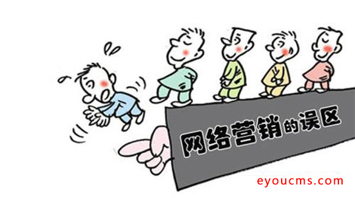
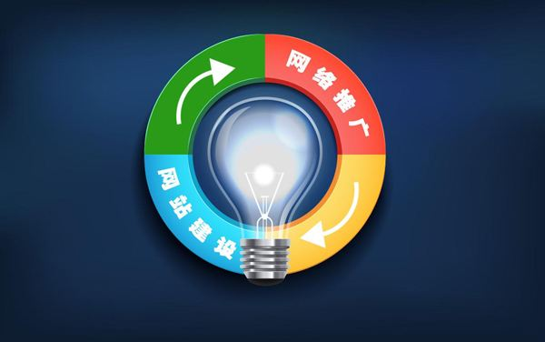
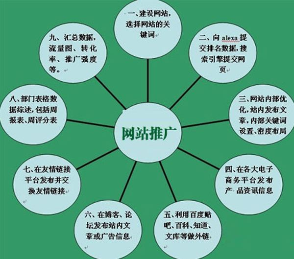

随着越来越多的人选择在互联网上寻求合作，很多商家也把自己的产品放到互联网上，企图获得更多曝光率，从而增加产品的销量，但在众多企业中，不难发现网络推广做得好的，大多都属于那种愿意投资并愿意深入了解用户需求思维的企业，而不单单局限在产品的认知上，为什么在互联网如此发达的年代里，仍然有那么多企业做网络推广不起效果呢？在网络推广营销的认知上面又存在什么样的误区呢？下面笔者就根据自己的观点来和大家分享一下，希望对大家有所帮助。

误区一：推广就等于营销
很多企业老板认为，只要我把推广做好了，有了曝光率后产品销量就能大大提升，虽然推广能增加企业的业务量，但是并不是绝对的，不然也不会有那么多人感觉做了推广没有效果了；这一点也是企业做互联网推广的一个误区，举个例子吧，线下推广和线上推广虽然方法不同，但是原理是大同小异的，你请一个人去发传单，别人接了传单，然后传单也发完了，但是没有人来购买产品，是不是就代表发传单这个方法不行呢？当然不是，其实哪怕是以发传单的形式去推广，只要有用户接了看了，产生曝光率后，推广的工作和效果就算完成；同样的，做推广的目的是增加曝光率，从而增加用户关注度，最终产生合作的模式，而不是通过推广来卖产品。
建议：还是易优小编之前说过的一句话，能否产生合作是市场需求所决定，而非推广的好坏，举个例子说明吧，如果你是一个老板，在一个穷乡僻壤中做昂贵的沙发生意，你通过发传单或者互联网的方式让每一个人都知道你是做沙发的，从这里就可以看出推广的效果已经达到，但是穷乡僻壤的地方，谁又购买得起那么昂贵的沙发呢？于是没有销售量，就认为做推广没有任何效果，是不是有点不理智呢？
在这里笔者先吐槽一两句，若是企业做互联网推广，不妨在做之前先对市场做一个市场调研报告，产品用户需求大不大，购买人群在什么阶段，又有多少个竞争对手，产品是否能让用户产生依赖性等，推广的最终目的是增加曝光，而营销的目的则是获得产品合作的转换，因此你在要求网络营销的时候，就要分清你是在做推广还是在做营销！
补充：很多人还是不太分清网络推广和网络营销的区别，推广的目的通过一系列手段增加曝光，诸如竞价、SEO、自媒体等都属于推广范畴，而营销则是根据市场数据，定制一套详细的营销方案，然后结合一系列的推广方法，主要是需要发挥自己的创意性，达到曝光与销售的结合，说起来营销的技术门槛要高得多。
误区二：网络推广是锦上添花而非救命稻草
很多传统的企业，在看到互联网发展如此迅速的情况下，就抛弃了原有的推广销售模式，转入互联网推广的模式，由于自身认识不足而导致销售业绩直线下滑，有的企业销售量不好，就天真的认为做了网络推广就能让企业的业绩起死回生，殊不知期望值越高，失望值就越高，往往靠互联网推广就能救活企业的例子少之又少，一个企业真正的想要做好，首先得保证产品的质量要达标，其次是能否站在用户的角度去思考问题，帮助用户解决心中的疑虑；如果总是站在一个卖产品的角度去思考，那么卖产品的企业那么多，用户为什么要选择你呢？用户购买产品的动机是不是解决生活中的问题呢？如果这两点都没有问题，那么再适当的做一些网络推广，实现线上和线下的结合，提升销量自然不在话下。
建议：企业重视网络推广很好，但是也别一味的全靠互联网推广来救命，很多时候仍需要结合线下，同时选择做网上推广，就一定要站在用户的角度去思考问题，而不是一味的站在产品角度上思考。

误区三：网络推广营销不需要投入太多
和传统行业的推广投入来说，网络推广方面的投入确实不需要很多，像以前电话销售时期，一个公司里最起码几十个电话销售人员，一年下来估计几十万的投入，而网络推广不需要投入太多，但也并非达到不需要投入阶段，很多老板就认为网络推广不需要花费多少投入，认为请一个两人就能把网络推广工作做好，一般网络推广的工作比较多，其中包括网站设计、网站程序搭建、内容编辑、网上营销、网站推广等工作，还有的公司更残酷，你不是做网络推广的吗？对电脑应该熟悉，那么以后公司的局域网和电脑软硬件维护就交给你来了，这也是经常听到网络推广专员常常抱怨的一个原因，拿着一份工资，做好几份的工作，同时一般肯去做去学习的，大多都是技术不太稳定的人，一个真正这样全能的人，要么在大型企业做高管，要么自己去创业去了，还会给你那么辛苦的卖力？每月拿着拿刚够吃饭的收入。
建议：一个企业，如果真想做好网络推广的工作，那么投入是必不可少的，很多企业做一个网站，为了节约成本，竟然花几百块钱购买一些二手网站来做，要是这样都能起到效果，那么谁都可以花费几百块钱去创业了；同时在人力方面，最好多去了解一下，一般网络推广做得好的企业，都是有专门的推广团队的，分工明确，员工卖力，所以推广的效果自然而然就好了。没有投入就没有收获，贪图便宜等于是自掘坟地。
误区四：做了个网站就是互联网营销
现在网站不像以前那么稀缺了，只要肯出钱，每一个人都能拥有属于自己的网站，而很多企业就是看到同行有一个网站，认为他们是通过这个网站在互联网上做营销的，因此自己也做了一个网站，但是推广工作并不完善，没有任何访问量，就认为做网站没有发展前途；其实不然，做网站仅仅只是网络推广营销中的一个基本环节，没有网站你就不算网络营销，有网站你也不一定算网络营销，甚至有的企业连个网站都没有，整天嚷嚷着要做网络推广，然后又觉得网站没有必要，最后也就消失在互联网推广的浪潮之中。
建议：做了一个网站仅仅是在诺大互联网上拥有了展示自己的名片，如何把名片交到客户的手中仍然值得思考，同时网站作为企业的形象，如果真想在网络推广上取得销售方面的突破，那么前期就不要害怕投资，可以多花一些钱做好一个网站，然后在咨询一些网络营销的高手，询问一下网站的布局和设计等，推广和网站是密不可分。
误区五：总是站在站长的角度考虑问题
很多企业的网站都有这样的毛病，力求追寻高大上，特效漫天飞，要给用户进网站有一个视觉的冲击，恨不得把自己的所有资料都放在网站上交给用户去看，害怕客户不联系自己而搞一些莫名其妙的弹框；其实这些操作都是搬起石头砸自己的脚，一般用户进网站，是寻找自己想要的东西，而不是来欣赏网站的设计风格，据统计，一般一个简洁干净排版整齐的网站是用户最不反感的，而用户比较反感的就是那一种特效华丽的网站，找半天都找不到自己想看的内容。
建议：如果做好了一个网站，不妨不要以自己的欣赏水平去看网站，最好是能让用户快速的在网站内找到自己想看的内容才是王道。

误区六：网络推广就是去网上发帖
很多朋友咨询过这个问题，上来就直接问，我是做网络推广的，您看在什么地方发帖能吸引到客户呢？很简单的一句话就已经暴露了他推广的误区，要是发帖就能做好网络推广，那岂不是人人都可以把网络推广做好了，而当你肯花费时间告诉他做网络推广首先得分析用户需求和群体，然后在根据用户特点做文案，在以一个用户接受的方式进行推广宣传；他就不乐意了，这些方法好麻烦啊，你有没有又快又好又简单的推广方法啊？这时候几乎就终结了话题，因为他的问题是无解！
建议：网上发帖仅仅是网络推广的一小部分，而且如何发帖也很有技术含量，绝对不是这里复制那里粘贴，然后留下自己的联系方式那么容易的，需要考验发帖地的精准性与客户的粘度，同时发帖时间也很有讲究。
误区七：SEO做得关键词越多越好
现在很多企业都了解SEO这一门技术，然后就请人做了SEO，然后自己又不懂得筛选价值核心关键词，不根据一些可靠的搜索数据进行分析，全屏自己大脑想出来的关键词，有的企业甚至更可怕，一下就列出了几十个关键词出来，让别人帮忙做，结果一报价就受不了，虽然一些大网站能做好几百个关键词，但是对于一个企业来说，那么多关键词即便能做下来，也是需要花费很长的时间，一般企业就没有这个耐心去等；同时也不要把SEO当成网络推广的全部，SEO仅仅只是网络推广的一个环节。
建议：如果想做SEO推广，不妨先找专业人士讨论一下，让他根据一些可靠的搜索数据来帮你筛选几个具备价值的关键词，既能节约成本，也能提升推广的一个效果。
误区八：过分相信建站公司的技术
如果一个企业要做网站，大多都会选择一些规模比较大的建站公司，而这些建站公司也正是利用了老板的盲目性，直接告诉老板做一个高大上的网站就能吸引用户过来，其实站在一个推广者的角度来看，建站公司所做的网站大多重设计重功能，很少考虑到用户浏览的体验性，因为建站公司需要养活一大帮人，自然需要把推广效果顺利成章的融入进去；很多企业就是找了建站公司做网站，然后一年下来没有效果，就被建站公司关闭网站了。
建议：找建站公司做网站，在做之前不妨让他们先出一个网络推广的方案，能理出一个推广方案的，对网站后期的推广有着很多的促进作用。
误区九：模仿同行，依靠一些大型B2B平台推广
很多企业看到同行在一些大型B2B网站上推广，于是自己也去注册这些平台进行发布产品，殊不知依靠平台推广仅仅只是同行推广工作中的一小部分，同时在这类B2B平台上也充斥着一些浑水摸鱼的商家，用户对这些平台的信任度并不是很高，这样做的话也仅仅只是模仿到了同行的形而已。
建议：每一个推广方式都有着不同的效果，但是如果只做B2B平台的推广，那么效果肯定不会太大，一般都需要结合多方面的推广渠道一起做，才能实现网络推广的最大效果。
总结：在网络推广的浪潮中，有的企业被浪潮拍在了沙滩上，也有的企业如鱼得水，最大的区别就是被拍在沙滩上的企业，大多都陷在这个网络推广的误区中无法脱身，但不管你是否做成功，网络营销推广乃大势所趋，想要做好不妨多花时间去学习和了解，以上就是易优小编的个人看法，不喜轻点喷。